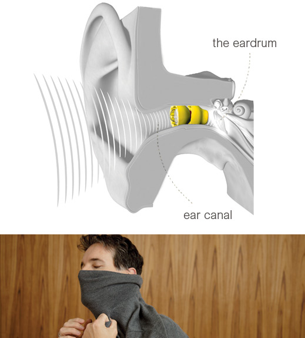

With Lyric, Phonak is enhancing its product range with a completely new product category: the first hearing aid in the world that is totally invisible from the outside and can be worn 24/7 for several months at a time. The overall concept that comes with this has already proved extremely successful and prompted a great deal of interest and high demand, as experience in the USA has shown. Lyric has been sold there with great success for over four years. Hundreds of hearing care professionals have already become authorized Lyric partners and thousands of clients are already in the fourth or fifth year of their subscriptions.
Lyric offers you a whole new approach to better hearing: